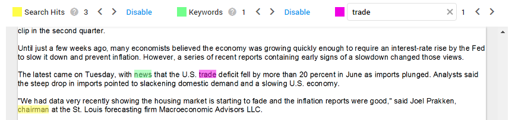

ZyLAB ONE offers various searching techniques, such as Boolean, proximity operators, wild card search, and much more. Searching and sorting through the data is the most important step for handling a DSAR. By using the right search techniques, all relevant documents can be easily found and quickly sorted by using tags.
For instance, by using the queries previously listed, all special category personal data can be found and tagged to distinguish between regular and sensitive personal data. Searching is the foundation of a DSAR process, whereby all relevant documents are found and redacted where necessary.
Example: Once the matter is uploaded in ZyLAB ONE and keyword highlighting rules have been added, Enron proceeds to search and sort through the uploaded data. There are many different search techniques that can be used. They first start by searching the different variations of John Doe’s name, using the following query:
1 of {John Doe, J. Doe, John X, John X. Doe, John Xavier Doe, Mr. Doe, John Smith, Mr. J, John Xavier, Javier Doe}
The most important step in handling privacy requests is locating personal data. Once all documents with a variation of the name ‘John Doe’ have been found, all other personal data will need to be linked to the data subject’s name.
After this, it is important to link every category of personal data to the requester’s name. To search the personal data using queries, PI detectors have to be created. The most efficient approach, is to make a field of queries for every separate category of personal data. ZyLAB ONE already contains many sample queries to help you locate the relevant data.
There are many ways to search through data in ZyLAB ONE, but the most straightforward way is by using the search bar.
First, as the user, you have to select a matter and press Browse. In the search bar, you can enter keywords, boolean operators, proximity operators, wildcards and many more. Using the search bar to locate personal data is helpful when you already know what you’re looking for. For example, if you’re looking for a specific phone number, you can type the phone number in the search bar and all documents containing that phone number, will appear. For more information about all possible operators—see ZyLAB ONE Search Language Guide.

When active, the Query Builder button is blue.
The Query Builder assists you in creating complex queries.
Combine search terms with operators such as: AND,
OR or NOT.
Other suggestions are: W/5 (Within), P/5 (Precedes),
~2 (Fuzzy), () (Parentheses),
[0-9a-z]{3} (pattern), 2 OF {query1, query2, query3} (Quorum).
|
|
Tip: Select Parentheses and immediately start typing (the cursor is automatically placed inside the brackets). |
Combine full-text and Fields/Tags/Review Status queries with AND or OR. Select the button to switch from AND to OR and back.
The AND/OR button is gray when not active (that is, not combined with another query).
Select  to add a sub query (nested query), with a maximum of 7 levels for sub queries within sub queries. A sub query can be added to the highest/first level, or nested within sub queries.
to add a sub query (nested query), with a maximum of 7 levels for sub queries within sub queries. A sub query can be added to the highest/first level, or nested within sub queries.

|
|
Note: You can add more than 7 sub queries to the highest level. |
|
|
Important: Take note of the current limitation: You cannot add Tags/Review Status queries to sub queries. |
Select  to search Fields, Tags and/or Review Status.
to search Fields, Tags and/or Review Status.
|
|
Tip: Use the Home or End button to quickly scroll when filtering the fields. |
|
|
Note: For performance reasons, only the first 10 values will be shown in an extracted entity field. For instance, if extracting email addresses, then only the first 10 extracted email addresses will be shown. If you want to view all extracted email addresses, you need to download or export the result list. |
Search quickly on years/months within Fields. 
To search for documents with a certain tag, select the tag:

To search for documents without a certain tag, select the tag:  , then select NOT:
, then select NOT:
To search the Review Status, select Reviewed or Not Reviewed: 
:
Click
 to reuse your queries (for example, for defining the initial Training Set in Assisted Review).
to reuse your queries (for example, for defining the initial Training Set in Assisted Review).
|
|
Note: All executed queries are stored in the History tab of Saved Searches. These queries can be reused, but cannot be renamed/shared or deleted. |
You can only share/rename or delete a saved search:

Rename in the General tab:

Share in the Shared With tab.
|
|
Note: You can only share with users/groups that have a role with the 'Access Matter' permission. For more information, see Role Permissions Explained. |

View your search results as:
Discover our Search Language Techniques, such as fuzzy searches, wildcard searches, macros and more.
Explore all our Search Methods, including Batch Search.
Searched keyword(s) are highlighted in Document View, so the reviewer can focus on that part(s) of the document. The different search highlighting colors are yellow for Keyword Search, custom selected color for Keyword Highlighting, and pink for Search within a Document (Ctrl + F)).
Use the arrows or Shortcut Keys to move forward and backward along the hits.

For more information about keyword searching, watch this video: